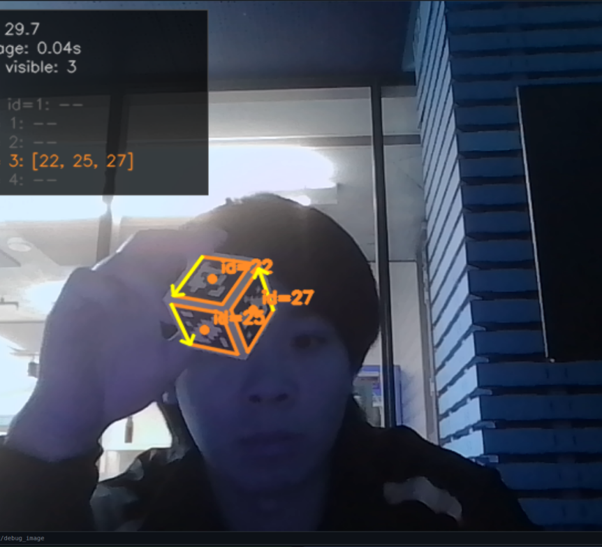
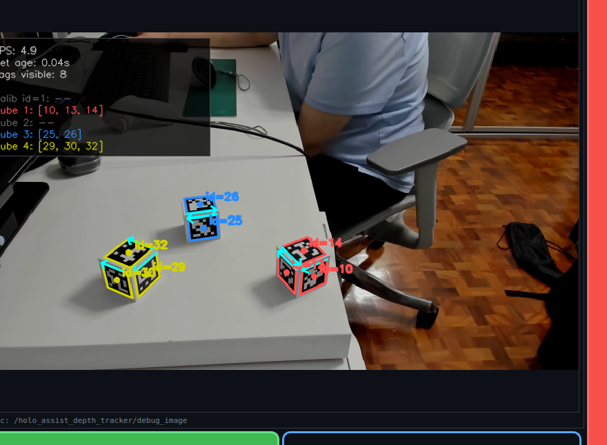

What this subsystem does
The perception subsystem tracks up to 4 physical 40 mm cubes using AprilTag stickers (36h11 family, 32 mm printed size). Each cube has 6 tags — one per face — with IDs grouped into four physical cubes (IDs 10–33). A cube is detected as soon as any single face is visible.
When multiple faces are visible, a consensus filter averages candidate centres within 5 cm of each other, rejecting outliers. A 3 mm deadzone suppresses jitter. Once detected, the last known position is frozen in RViz even after tags leave the camera frame.
Cube poses are resolved into the robot base_link frame using the saved easy_handeye2 calibration (base_link → camera_link transform). Poses are also relayed to Unity so the Quest 3 XR scene can display cube holograms at the correct physical locations.
Lead: John Chen · Package: holo_assist_depth_tracker · Camera: Any camera — RealSense D435i, UVC webcam, or laptop webcam

